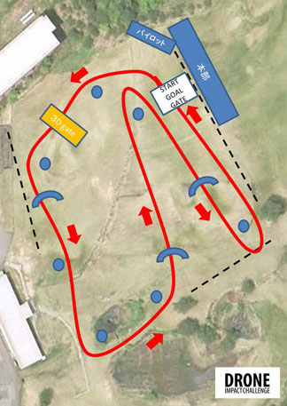
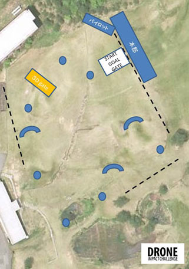

Notes on battery from the airplane company
If the lithium content is more than 2g, or if the watt-hour rating the amount is more than 160Wh becoming not bring in-flight.
All Pilot
The pilot, always participate in that briefing, which will be held in 30 days morning.
aircraft capable of undergoing an airframe inspection, and until the two aircraft. As a result of a malfunction or failure, when they go you need to use the three aircraft or more of the aircraft, there is a need to undergo inspection at promptly tournament headquarters.
for battery replacement at the time of the test flight, landed the aircraft in a safe place, to exchange in the area of the convention, organizers were determined. Do not turn on the power until there is a consent of the Marshall and third-party pilot.
At the time of the competition flight, a third party should not put the aircraft power supply and VTX power.
In the unlikely event that there is a need to turn on the power, putting the power with the consent to all Marshall and competition pilot.
1.Master class

●July 30 (Saturday)
Qualifying round
Attack Wrap method: 1 fastest lap of laps
Flight time limit: as long as it is within a 5-minute time limit, can be any number of laps
Start by 3 machine
After a flight, time measurement start than at the start gate pass
Qualifying the top about 10 people advance to the Main Draw
Aircraft changes and parts changes during the competition is allowed. However, at the time of the aircraft inspection, multiple machine
Need for a pre-registration.
Penalty in the case of the shortcut and the gate non-passage of the flag, the goal It adds 5 seconds each after a time.
The above mentioned method may be changed forced on the number of participants and progress of convenience.
●July 31 (Sunday)
Finals Tournament system
And the semi-finals by qualifying superiors.
After-by multiple machine 1 group, 3 laps round. The top person and finals.
Finals, Start 3 laps at multiple machines at a higher person of each group.
Penalty in the case of the shortcut and the gate non-passage of the flag, and adds 5 seconds each in the time after the goal.
If you happen to crash into the semi-finals and during the competition's final, return on their own flight. Unless it will be retired at that point in time, at the disarmed state until the end of the competition .It is waiting.
The top three people winning.
The above mentioned method may be changed forced on the number of participants and progress of convenience.
2.Wing class
●July 30 (Saturday)
Attack Wrap method: 1 fastest lap of laps
Flight time limit: as long as it is within a 5-minute time limit, can be any number of laps
Start by 2 machine
After a flight, time measurement start than at the start gate pass
Aircraft changes and parts changes during the competition is allowed. However, at the time of the aircraft inspection, multiple machine
Need for a pre-registration.
Penalty, when out of the prescribed course, adds 5 seconds each time.
The above mentioned method may be changed forced on the number of participants and progress of convenience.
3.Freestyle class

●July 31 (Sunday)
Free flight
Must fly FPV
All judging via FPV
Flight time limit: 2 minutes BGM pre-submission (file format, mp4 or CD)
Flight by 1 machine
Point examination by the jury 5 Judges
Three Judgement Categories: Difficulty, Style/Flow, Use of Course/Obstacles
Each category scored 0-5 for a total of 15 maximum points per judge, 75 maximum points for all three judges
No qualifying, the main race only.
After a flight, time measurement start than at the start gate pass
Aircraft changes and parts changes during the competition is allowed. However, at the time of the aircraft inspection, multiple machine. Need for a pre-registration.
The above mentioned method may be changed forced on the number of participants and progress of convenience.
Racing competition structure
It is recommended that the competitions use the following structure, although individual events may elect to use a different structure.
Practice: Pilots may practice at the designated practice fields before the event. Practice runs may be timed and may be used for qualifier seeding.
Qualifiers: Competitions may include one or more rounds of qualifiers, with either seeding or advancement as a result of best single lap time or best complete race time.
Mains: Competitions may include one or more rounds of main heats, with best complete race time, finishing order or a points-based system based on finishing order deciding advancement to finals.
Finals: Pilots who advance from the mains compete in finals, with best complete race time, finishing order or a points-based system based on finishing order deciding final results.